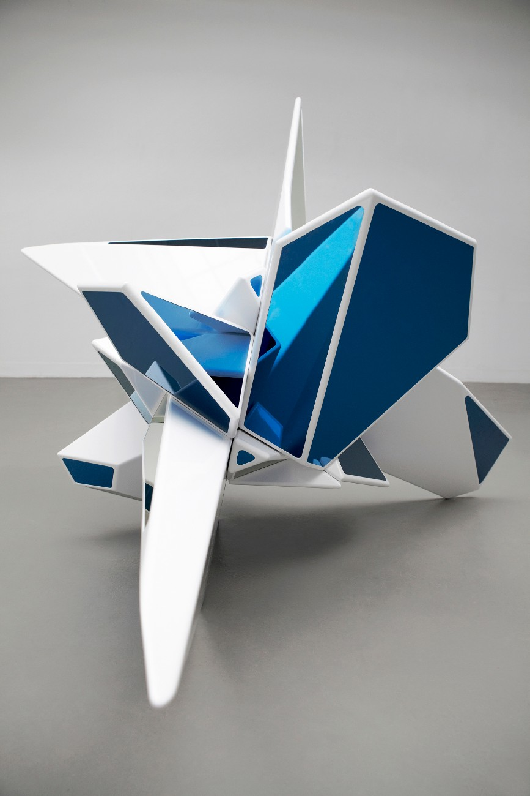
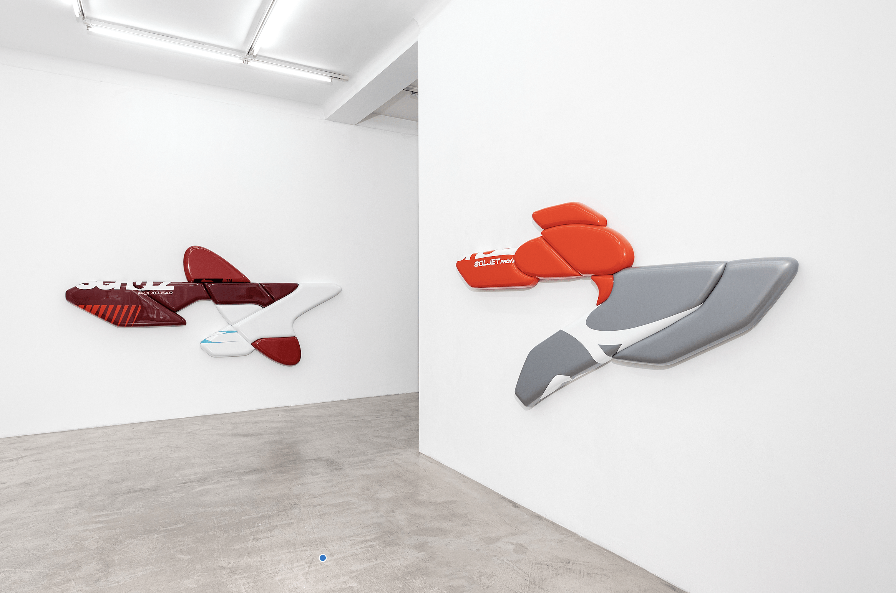
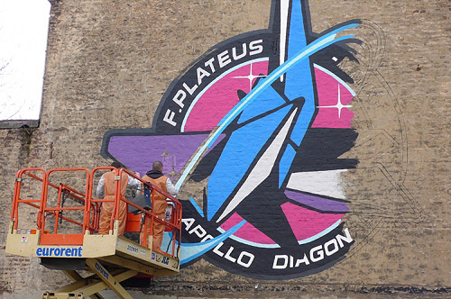
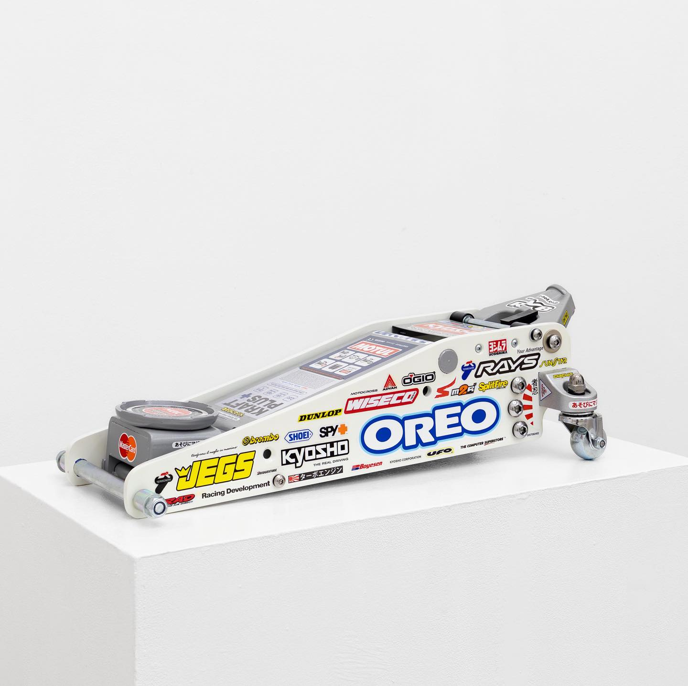
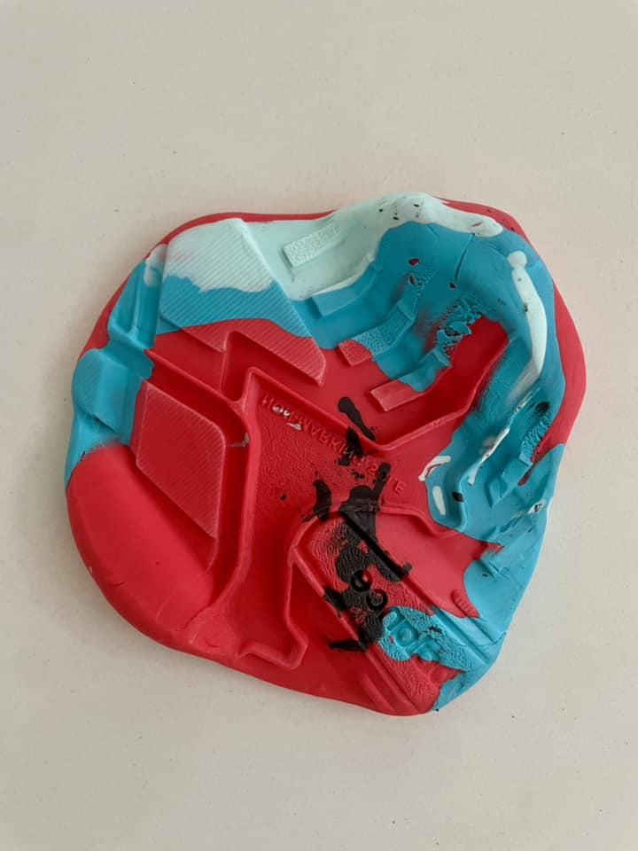
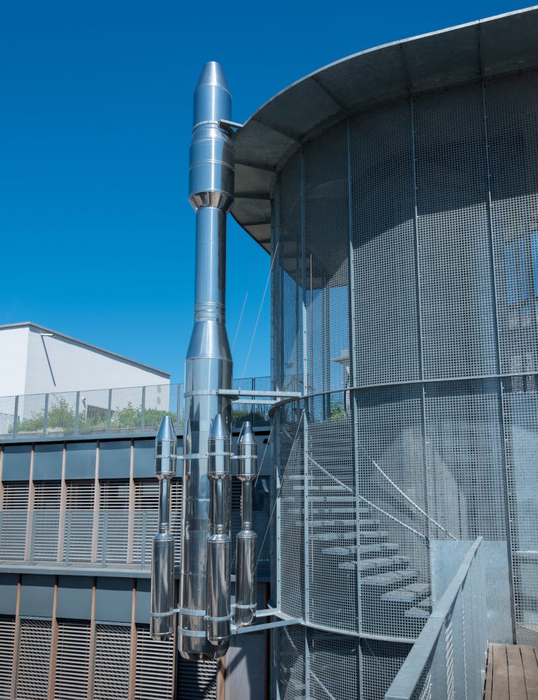

001 / Silver Rocket
Silver Rocket
Silver Rocket est une œuvre installée au Delta, à Namur. Sur ce site, elle se reconstruit progressivement : plus le parcours avance, plus l’œuvre se complète, et plus on en apprend sur elle et sur son créateur.
002 / Frédéric Platéus
Frédéric Platéus
Frédéric Platéus est un artiste belge né à Liège en 1976. Son travail mélange sculpture, design, culture populaire et objets techniques. Il crée souvent des formes lisses et précises qui semblent venir d’un univers mécanique ou futuriste.


003 / Thématiques
Lire l’œuvre
Silver Rocket peut se lire à travers plusieurs idées : sa forme, son rapport à l’objet technique et l’imaginaire. Ces éléments permettent de comprendre pourquoi elle ressemble à une fusée sans être une vraie machine.
La sculpture est construite autour d’un axe vertical. Cette direction vers le haut donne une impression de départ, d’élévation et de propulsion.
L’œuvre reprend l’apparence d’un objet lié à la technologie, mais elle n’a aucune fonction pratique. Elle utilise les codes d’une fusée pour devenir une image plus symbolique qu’utilitaire.
Silver Rocket évoque la conquête spatiale, les récits futuristes et l’envie de dépasser les limites terrestres. Elle fonctionne comme une projection imaginaire vers un autre monde.
004 / Œuvres
Autres œuvres
Les autres œuvres de Frédéric Platéus permettent de mieux situer Silver Rocket. On y retrouve le même intérêt pour les formes fortes, les objets transformés, les surfaces artificielles et les références au design.

Solid Rock Hexahedron 2009
Cette œuvre ressemble au puzzle Skewb, mais transformé en sculpture futuriste. Avec ses formes géométriques, ses pointes et ses couleurs bleues et blanches, elle fait penser à un objet entre le jouet, la mécanique et l’univers spatial.

Apollo Diagonal 2009
Ces œuvres ressemblent à des morceaux de fusées ou de véhicules futuristes. Elles sont accrochées au mur comme des formes en mouvement, avec des couleurs brillantes qui rappellent la vitesse, le sport mécanique et la science-fiction.

Apollo Diagonal 2009
Ce graffiti représente l’œuvre sous forme de grand logo. Frédéric Platéus transforme cette forme géométrique en image murale colorée, entre puzzle, fusée et street art.

SOLJET Pro III 2024
Cette œuvre reprend les codes du tuning, du sport mécanique et des stickers. En transformant un objet industriel en sculpture, Frédéric Platéus mélange nostalgie, culture populaire et esthétique high-tech.

MK5-125 2021
Une forme colorée qui semble fondre, entre objet industriel, matière plastique et esthétique pop.
005 / Le Delta
Le Delta
Le Delta est un centre culturel situé à Namur. Dans ce lieu, Silver Rocket dialogue avec l’architecture du bâtiment. Sa position sur le mur renforce l’idée de verticalité et attire naturellement le regard vers le haut.

006 / Conclusion
Conclusion
Au fil du parcours, la fusée se complète comme la lecture de l’œuvre. Chaque section ajoute une information : l’artiste, la forme, les thèmes, les autres œuvres et le lieu. À la fin, Silver Rocket apparaît comme une sculpture complète. Vous pouvez maintenant parcourir à nouveau le site avec le modèle complet de la fusée.
Retour au début ↑